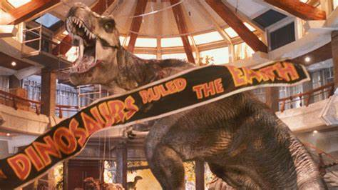

EL INCREIBLE PARQUE/MUNDO JURASICO
Orden de las películas de Jurassic Park y Jurassic World:
- Jurassic Park de Steven Spielberg: La primera película cambió el mundo de la ciencia ficción y el cine, recordándonos que Steven Spielberg es uno de los mejores directores de la historia. En la primera parte, científicos clonan dinosaurios en una isla con la intención de crear un parque temático, pero subestiman la naturaleza de estos animales prehistóricos y pronto se enfrentarán cara a cara con los dinosaurios que escaparon.
- The Lost World: Jurassic Park de Steven Spielberg: Cuatro años después de la primera entrega, el Dr. Ian Malcolm y su equipo regresan a la isla para filmar un documental acerca de los dinosaurios en su hábitat. Sin saberlo, se ven envueltos en una misión para llevar a estas criaturas a las ciudades y exponerlas al mundo entero. Los protagonistas deberán evitar que se arruine la paz de los dinosaurios y enfrentarse a los verdaderos villanos: la avaricia humana.
- Jurassic Park III de Joe Johnston: El director Joe Johnston tomó la franquicia en el 2001 y nos regresó una vez más a la Isla Sorna con el Dr. Alan Grant, quien lleva a una pareja al mundo de los dinosaurios bajo engaños. Lo que era un viaje sencillo se vuelve peligroso y nuevos dinosaurios salen a la luz.
- Jurassic World de Colin Trevorrow: El inicio de la segunda parte de la saga, ahora titulada Jurassic World, dirigida por Colin Trevorrow, cambia la dirección de la trama. Con Bryce Dallas Howard y Chris Pratt como los protagonistas, los humanos han encerrado a los dinosaurios en un parque llamado Jurassic World, donde pueden interactuar y convivir con ellos. Pero la seguridad del lugar es quebrada cuando un dinosaurio híbrido se escapa y ataca todo a su alrededor.
- Jurassic World: El Reino Caído de Juan Antonio Bayona: Después de los sucesos catastróficos en Jurassic World, los dinosaurios regresaron a vivir a la isla, pero un volcán amenaza su existencia, por lo que científicos y mercenarios buscan la manera de restaurarlos y venderlos en el mercado negro. Los héroes de la primera parte deben evitar que se usen como armas.
- Jurassic World: Dominio de Colin Trevorrow: Los dinosaurios ahora viven entre humanos en todo el mundo, lo que lleva a que los protagonistas de Jurassic Park y Jurassic World trabajen juntos para enfrentar una amenaza genética global y encontrar un balance entre el pasado y el presente.
- Jurassic World: Renacimiento (2025): Nuevos personajes, una nueva trama. Para la séptima película, el director Gareth Edwards toma las riendas y nos presenta a Zora Bennett (Johansson) y su equipo, que están en búsqueda de material genético de tres dinosaurios gigantes. En su camino terminan varados en la isla donde se encuentra un nuevo espécimen, más peligroso que todas las criaturas de las películas anteriores.
Franquicia iconica
Cuando los dinosaurios dominaban la tierra
Inicio de Parque Jurasico
La franquicia de Parque Jurásico, que incluye libros, películas, series, cortos y videojuegos, se inició gracias a la publicación de la novela Jurassic Park por parte de Michael Crichton en 1990. El libro, que puedes comprar en Amazon, trata sobre ingeniería genética y concretamente con el intento de recrear (o revivir) de forma artificial varias especies de dinosaurios y exhibirlas en un parque temático en Costa Rica.
Pocos años después, en 1993, Steven Spielberg dirige la película Jurassic Park basada en el libro, iniciando así una serie de cinco secuelas y logrando introducir en el imaginario colectivo la fantasía de los dinosaurios (y cierto terror) a millones de personas.